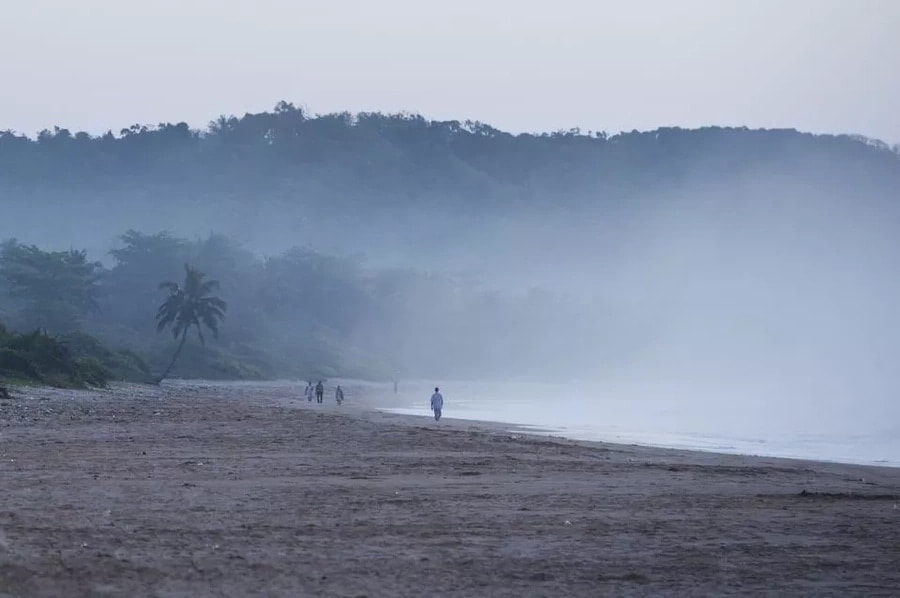

Travelling to Africa, Ghana for the first time? It’s hard not to have your expectations fight. While it is said that America is a land of great opportunities and endless possibilities,
Africa and Ghana is specific is a land of diversity and adventure. When travelling to Ghana, before you take your flight ensure you have packed all you
need since this country offers virtually endless possibilities when it comes to great tourism and adventures. Interested? Read on to find out ten of the best tourist sites in Ghana that are a must in your travel diary.
The Cape Coast Castle
The Cape Coast Castle is one of the destinations at the height of tourism in Ghana. Located at Ghana's Atlantic coast, this location was at the centre of most European powers.
The Cape Coast Castle was initially built by the Swedish Africa Company in 1653 to act as the trading point for Gold and timber industries. However, it was later converted by the British and Dutch into a slaveholding point.
Currently, the Cape Coast Castle is a museum and a store of the important history of the Ghana nation. If you are a history lover, then this is one of the tourist attractions in Ghana you don’t want to miss out on.
Accra
Accra, the capital of Ghana, is one of the tourists' destinations you should visit while in Ghana. A sprawling city with a vibrant economy and warm residents there is a lot you can learn from this city.
Considered one of the safest cities to live in the word, Accra is also strategically located with the distance from Accra to Kumasi being 253km making it virtually accessible to anybody.
Mole National Park
To the lovers of wildlife and nature, Ghana offers lots of places to visit in Accra. However, if you are looking for something breathtaking, then the Mole National Park is the place to be.
Situated in the northwest Ghana the park is the largest in the country and has a wide variety of animal species and birds.
Kokrobite
The Kokrobite is home to the most amazing beaches in Accra.
Beaches aside the other tourist attraction site in this town are the exceptional Academy of African Music and Art (AAMA) commissioned by the great Mustapha Tettey Addy. Here you get to relax in the quality music of the Ghanaian people.
Kumasi
The second largest city in Ghana, Kumasi is located in the southern central parts of the country. In this town, you’ll get to enjoy the amazing Ghana tourist sites found here but above all the amazing artefacts from the area residents who are mostly artisans.
When visiting Kumasi, you need t ensure that you come prepared with enough money to spend as there is surely enough in terms of gold jewellery, wooden carvings and clothes for everybody. Arguably this is one of the beautiful places in Ghana with lots of warm and friendly residents.
St George's
The St George's Castle is one of the fun places in Accra you must visit. A visit in this history landmarks takes you on a journey to the past trading activities in Ghana. In addition to the commerce knowledge, you will also be able to enjoy breathtaking places of this place.
Kakum National Park
One of the things to do in Accra should be visiting the Kakum National Park. Forget about the amazing wildlife and serene weather of the densely populated forest, your highlight of the visit to this park ought to be the walk on the amazing Canopy Walkway.
Hanging 30 meters/100 feet above ground level, the walk way is more than 350 meters/1150 feet long and passes thrhhhhhhough several bridges offering you an amazing opportunity to enjoy Kakum National Park’s nature and wildlife while at the same time testing your fears of heights.
Busua Beach

Another addition to Ghana tourist sites is the Busua Beach. This beach offers guests and visitors coming to Ghana an awesome opportunity to unwind their day at the magnificent Atlantic enjoying the beautiful sunsets.
Thanks to the many luxurious hotels surrounding the beach you get to enjoy the amazing culture and food of the Ghanaian with a small touch of class.
Bobiri Butterfly Sanctuary
If you are a lover of butterfly, the Bobiri Butterfly Sanctuary offers you incredible opportunities to enjoy the different butterfly species found in Ghana. The good news is that the sanctuary is just 20km from Kumasi city.
Lake Volta, Ghana
At the heart of the Greenwich meridian, get to enjoy a fantastic boat ride in lake Volta while enjoying the amazingly beautiful mountains in Ghana surrounding it.
Bonwire Kente Weaving Village
Before you end your tour in Ghana ensure you have made your way into the Bonwire Kente Weaving Village. Here you will get learn about the weaving process into the most significant wear in Ghana, the Kente. Do not also forget to carry some of your friends and family back at home.
Yes, you’ve just had a theoretical tour into what makes the Ghana tourism sector. This industry is quite large with many places with haven’t mentioned; however, the above ten locations should be the starting point of your forthcoming tour. Get a Ghana map with regions and a regional guide and set your off on a fantastic journey of Ghana.
source : www.yen.com.gh